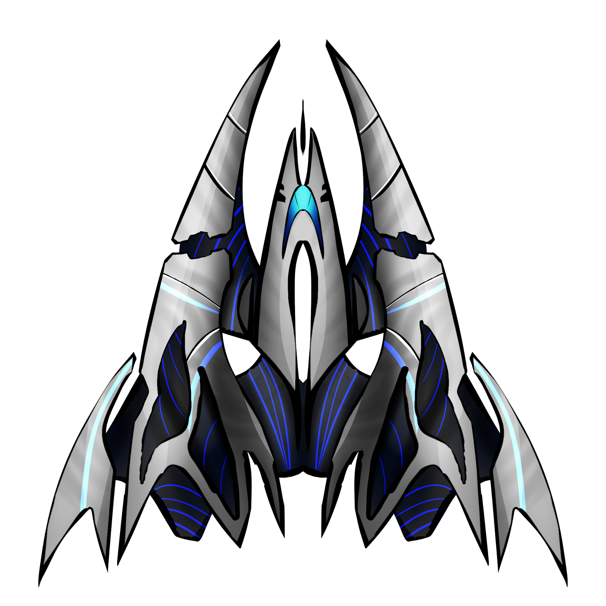

Warp Factor
Score: 000Select Game Mode
Single Player MultiplayerChallenge
Arcade BossPress SPACEBAR now to select your spacecraft.
Select Your Spacecraft

Press SPACEBAR to proceed to the Briefing.
Using the ARROW keys on your keyboard, manoeuver the spacecraft safely to avoid the incoming space debris.
Along your journey you may come across anomalies which will give you bonus points and repair your hull, collect these before they disappear.
Once you have entered warp, you may fire your ships weaponry by pressing SPACEBAR.
Press SPACEBAR to enter warp.
Warp Suspended
Resume Restart Sounds MusicThe Hall of Fame
Press ESCAPE to return to the main menu.